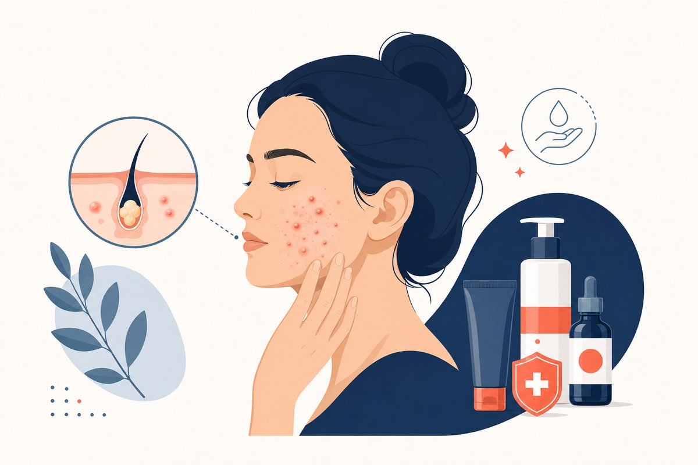

Key Takeaways
- Acne affects 85% of adolescents, and it can also begin or continue in adulthood, especially in women.[6]
- Acne is conventionally linked to four factors: excess sebum production, follicular hyperkeratinization, Cutibacterium acnes proliferation, and inflammation. Effective treatment targets multiple factors simultaneously.[7]
- The 2024 AAD guideline makes strong recommendations for topical retinoids and benzoyl peroxide, and lists combining topical therapies with multiple mechanisms of action as a good practice statement.[2]
- The 2024 AAD guideline gives spironolactone a conditional recommendation,[2] and a 2025 meta-analysis of five placebo-controlled trials in women found much higher odds of objective acne improvement with spironolactone.[5]
- Early, aggressive treatment is the single most important strategy for preventing permanent acne scars, scarring is preventable but not fully reversible.

Acne is the most common skin condition in the United States, affecting nearly 50 million Americans each year.[6] Yet despite its ubiquity, acne remains one of the most misunderstood conditions I encounter in clinical practice. Patients arrive in my office having tried dozens of products, followed conflicting advice from social media, and, perhaps most damagingly, internalized the idea that acne is a cosmetic nuisance rather than a legitimate medical condition.
Let me be direct: acne vulgaris is a chronic inflammatory disease of the pilosebaceous unit. It has a well-characterized pathophysiology, evidence-based treatment algorithms, and, when inadequately treated, the capacity to cause permanent physical scarring and significant psychological harm. Acne affects 85% of adolescents, and what many patients don't realize is that it can also begin or continue in adulthood, especially in women.[6]
In 2024, the American Academy of Dermatology published an acne guideline that updates its 2016 guideline[1] and presents 18 evidence-based recommendations and 5 good practice statements.[2] This guide distills those guidelines, combined with current acne management practice and the peer-reviewed evidence base, thorough, honest, and actionable.
What Causes Acne? The Four Pathogenic Factors
Understanding what drives acne is essential for understanding why certain treatments work and others don't. The pathophysiology of acne is conventionally linked to four factors within and around the pilosebaceous unit (the hair follicle and its associated oil gland): increased sebum production, follicular hyperkeratinization, Cutibacterium acnes proliferation, and localized immune responses.[7]
1. Excess Sebum Production
Sebaceous glands produce sebum (oil) under the influence of androgens, particularly dihydrotestosterone (DHT). During puberty, rising androgen levels dramatically increase sebum output. In some individuals, the sebaceous glands are hypersensitive to normal circulating androgen levels, which explains why you can have acne with entirely normal hormone blood tests. Excess sebum creates an oily environment that favors bacterial growth and contributes to pore clogging.
2. Follicular Hyperkeratinization
The cells lining the hair follicle normally shed in an orderly fashion. In acne-prone skin, these cells (keratinocytes) become excessively "sticky" and accumulate inside the follicle, forming a plug called a microcomedone. This is the earliest lesion of acne, invisible to the naked eye but the precursor to every visible blackhead, whitehead, and pimple. Topical retinoids work primarily by normalizing this process.
3. Cutibacterium acnes (C. acnes) Proliferation
C. acnes is a normal resident of human skin. However, when sebum accumulates behind a follicular plug, it creates an anaerobic (oxygen-poor) environment where C. acnes thrives. Certain strains of C. acnes are more inflammatory than others, which partly explains why some people develop severe inflammatory acne while others with the same bacterial burden develop only comedones. It's worth noting that acne is not caused by poor hygiene, aggressive washing can actually worsen it by disrupting the skin barrier.
4. Inflammation
C. acnes activates innate immune receptors (toll-like receptors) in surrounding tissue, triggering the release of inflammatory cytokines. This inflammation is what transforms a comedone into a red, tender papule, pustule, or deep nodule. Emerging evidence also implicates systemic factors, including psycho-emotional stress, diet and metabolism, dysbiosis of the gut and skin microbiome, hormonal fluctuations, and oxidative stress, as contributors to this inflammatory response.[7]
Types of Acne and Severity Grading
Acne presents along a spectrum, and accurately characterizing the type and severity is essential for choosing the right treatment.
Comedonal Acne (Non-Inflammatory)
Open comedones (blackheads) occur when the follicular plug reaches the skin surface and oxidizes, turning dark. Closed comedones (whiteheads) are flesh-colored bumps where the plug remains beneath the surface. Comedonal acne is the mildest form and responds well to topical retinoids, which normalize keratinocyte shedding. Many patients don't realize these are acne lesions at all.
Inflammatory Acne
Papules are small, red, tender bumps without visible pus. Pustules are similar but contain a visible white or yellow center. These represent the immune system's response to C. acnes within the clogged follicle. Moderate inflammatory acne typically requires combination topical therapy, and more severe cases may warrant oral antibiotics.
Nodulocystic Acne (Severe)
Nodules are large (≥5 mm), deep, firm, painful lesions that persist for weeks. Cysts are deep, pus-filled lesions that can coalesce to form sinus tracts. Nodulocystic acne carries the highest risk of permanent scarring and is the primary indication for isotretinoin. This form of acne can be disfiguring and is associated with significant psychological distress, depression, and anxiety.
Severity Grading in Practice
| Severity | Typical Presentation | Primary Treatment Approach |
|---|---|---|
| Mild | Mostly comedones with few inflammatory lesions | Topical retinoid + benzoyl peroxide |
| Moderate | Mix of comedones, papules, and pustules; wider distribution | Combination topical therapy ± oral antibiotic or spironolactone |
| Severe | Nodules, cysts, widespread inflammatory lesions, scarring | Isotretinoin, or aggressive combination therapy |
What's Changed: The 2024 AAD Guideline Update
In 2024, the AAD published a guideline that updates its 2016 acne guideline[1] and presents 18 evidence-based recommendations and 5 good practice statements.[2] Here are the changes that matter most:
The guideline lists combining topical therapies with multiple mechanisms of action, and combining systemic antibiotics with topical therapies, as good practice statements.[2] In practice, that means pairing agents that work in different ways rather than relying on a single product.
The guideline recommends limiting use of oral antibiotics when possible to reduce the development of antibiotic resistance, and using topical and oral antibiotics together with benzoyl peroxide to help prevent resistance.[6] A 2014 stewardship review advised limiting systemic antibiotics for acne to 3 to 4 months,[10] while a 2025 expert consensus panel said duration should be individualized.[11] Spironolactone and combined oral contraceptive pills receive conditional recommendations.[2]
Strong Recommendations (Apply to Most Patients)
- Topical benzoyl peroxide, used together with topical and oral antibiotics to help prevent resistance[6]
- Topical retinoids (adapalene, tretinoin, tazarotene, trifarotene), to help unclog pores and reduce inflammation[6]
- Topical antibiotics and oral doxycycline[2]
- Oral isotretinoin, for severe acne, acne causing psychosocial burden or scarring, or acne failing standard therapy[2]
Conditional Recommendations
- Topical clascoterone (Winlevi), a topical androgen receptor inhibitor first approved in the U.S. in 2020 for acne in patients 12 years and older[15]
- Salicylic acid and azelaic acid, topical options[2]
- Oral minocycline and sarecycline, alternative systemic antibiotics[2]
- Combined oral contraceptive pills, a hormonal option[2]
- Spironolactone, a hormonal therapy that addresses hormonal causes of acne[6]
Worth noting, the guidelines found insufficient evidence to make formal recommendations for dietary changes, chemical peels, laser and light-based devices, microneedling, or alternative therapies such as vitamins or plant-based products for acne treatment.[6]
Decision Framework: Manage at Home, See a Doctor, or Seek Urgent Care
One of the most common questions I receive is: "Is my acne bad enough to see a doctor?" Here's the framework used in practice with patients in clinical care:
| Scenario | Recommended Action | Rationale |
|---|---|---|
| Mild comedonal acne, scattered blackheads/whiteheads, few inflammatory lesions | Start with OTC adapalene (Differin 0.1%) + benzoyl peroxide wash. Use consistently; the OTC adapalene label notes it may take up to 3 months of once-daily use to see results.[16] | Adapalene 0.1% is sold over the counter for the treatment of acne.[16] Pairing it with benzoyl peroxide combines two topical therapies that the 2024 AAD guideline strongly recommends.[2] |
| Moderate acne not improving after about 3 months of OTC treatment, or acne leaving dark marks | See a physician for prescription-strength therapy | Prescription retinoids (tretinoin, tazarotene, trifarotene), higher-strength benzoyl peroxide combinations, or oral medications can provide meaningful improvement. |
| Deep, painful nodules or cysts, or acne causing visible scarring | See a physician promptly, do not wait | Nodulocystic acne causes permanent scarring. The 2024 AAD guideline strongly recommends isotretinoin for acne that is severe or causing scarring.[2] |
| Acne causing significant emotional distress, social withdrawal, or depression symptoms | See a physician, the psychosocial burden of acne is a valid medical indication for treatment | The 2024 AAD guideline recognizes psychosocial burden as an indication for isotretinoin.[2] |
| Sudden severe acne in an adult, or acne with virilization signs (deepening voice, irregular periods, unusual hair growth) | Seek medical evaluation, may require hormonal workup | Sudden onset of severe acne in adults can signal an underlying hormonal disorder (polycystic ovary syndrome, adrenal hyperplasia, or rarely, androgen-secreting tumor). |
Clinical Reasoning: What Your Doctor Evaluates
When I evaluate a patient with acne, I'm assessing far more than just counting pimples. Here's what's happening behind the scenes.
Lesion Type and Distribution
The types of lesions present (comedonal vs. inflammatory vs. nodulocystic) directly inform treatment selection. Distribution matters too: acne concentrated on the forehead and nose ("T-zone") in an adolescent suggests a different pathophysiology than acne along the jawline and chin in a 30-year-old woman.
Hormonal vs. Non-Hormonal Patterns
I specifically look for hormonal acne patterns, which include:
- Distribution: Lower face, jawline, chin, and neck
- Timing: Flares with menstrual cycles (typically premenstrual)
- Lesion type: Deep, tender nodules rather than superficial comedones
- Age: Persistence or new onset in adulthood, particularly after age 25
- Associated features: Irregular menstrual cycles, hirsutism, hair thinning, or acanthosis nigricans
Identifying a hormonal pattern is clinically important because these patients often respond poorly to standard topical therapy alone and may benefit significantly from spironolactone or combined oral contraceptives.
Scarring Risk Assessment
I assess whether the patient already has scarring, because active scarring changes the urgency and aggressiveness of treatment. A patient with moderate inflammatory acne and emerging ice-pick scars should be considered for isotretinoin earlier than the same patient without scarring. Once scars form, they are difficult and expensive to treat and can never be fully erased.
Treatment History
What has the patient already tried, for how long, and at what dose? "I tried retinol and it didn't work" often means the patient used an over-the-counter retinol serum (which is far weaker than prescription tretinoin) for a few weeks before giving up during the initial purging phase. Understanding the treatment history prevents repeating failed strategies and identifies whether the patient is truly treatment-resistant or simply undertreated.
Treatment Options: From Topicals to Isotretinoin
Topical Retinoids: The Foundation
If I could prescribe only one class of medication for acne, it would be topical retinoids. The 2024 AAD guideline makes a strong recommendation for them,[2] and the AAD describes them as helping to unclog pores and reduce inflammation.[6]
| Retinoid | Availability | Key Features |
|---|---|---|
| Adapalene 0.1% (Differin) | OTC | Sold without a prescription for the treatment of acne; used once daily.[16] |
| Tretinoin (various strengths) | Prescription | Named among the strongly recommended topical retinoids in the 2024 AAD guideline.[6] |
| Tazarotene | Prescription | Named among the strongly recommended topical retinoids in the 2024 AAD guideline.[6] |
| Trifarotene 0.005% (Aklief) | Prescription | Retinoid with particular activity at the gamma subtype of the retinoic acid receptor; labeled for the face and/or trunk in patients 9 years and older.[17] |
Practical tip: Retinoids often cause irritation, and acne can look worse for a while as microcomedones come to the surface. This is common and not, by itself, a reason to stop. The recommendation for patients: "Your skin may get worse before it gets better." Start every other night and gradually increase to nightly use as tolerated.
Benzoyl Peroxide
Benzoyl peroxide (BP) has a strong recommendation in the 2024 AAD guideline,[2] and the guideline advises using topical and oral antibiotics together with benzoyl peroxide to help prevent antibiotic resistance.[6] That makes it an essential partner in any acne regimen that includes an antibiotic. It can be used as a wash or as a leave-on gel.
Oral Antibiotics
Doxycycline taken by mouth receives a strong recommendation in the 2024 AAD guideline, while oral minocycline and sarecycline receive conditional recommendations.[2] The guideline also advises limiting systemic antibiotic use and combining systemic antibiotics with benzoyl peroxide and other topical therapies.[1] A 2014 stewardship review states that antibiotic monotherapy, topical or oral, is not recommended for acne.[10]
Doxycycline comes in products that are often confused: standard doxycycline, whose label gives a usual adult maintenance dose of 100 mg daily,[9] and a 40 mg modified-release capsule (Oracea) that is FDA-approved only for the inflammatory lesions of rosacea. The 40 mg product is designed to give blood levels below those needed to treat bacterial disease, but its label still warns that bacterial resistance to tetracyclines may develop.[8] The full breakdown is in the section below.
Doxycycline for Acne: The 40 mg vs 100 mg Question
Doxycycline is the oral antibiotic the 2024 AAD acne guideline strongly recommends,[2] but not all doxycycline is the same. Understanding the difference between the products is useful to know before starting an oral acne antibiotic.
The Two Doses and What They Mean
The two products differ in purpose. Standard doxycycline is an antibiotic, and its label says that in severe acne it may be useful adjunctive therapy.[9] The 40 mg modified-release capsule produces plasma concentrations that are less than the concentration required to treat bacterial diseases, and its label states that its mechanism of action in rosacea is unknown.[8]
- Standard doxycycline: the label's usual adult dosage is 200 mg on the first day (100 mg every 12 hours), followed by a maintenance dose of 100 mg daily.[9] Your clinician sets the dose and duration for acne.
- 40 mg modified-release (Oracea): one 40 mg capsule once daily in the morning on an empty stomach, labeled only for the inflammatory lesions of rosacea in adults. Its label still warns that bacterial resistance to tetracyclines may develop.[8]
Sub-antimicrobial 40 mg: the anti-inflammatory option
The 40 mg modified-release capsule (marketed as Oracea) contains two types of doxycycline beads, 30 mg immediate release and 10 mg delayed release, and the plasma concentrations it produces are less than the concentration required to treat bacterial diseases. It is FDA-approved only for the inflammatory lesions (papules and pustules) of rosacea in adults, so any use for acne is off-label.[8]
Its appeal is stewardship. Its label reports no detectable long-term effects on the bacterial flora of the oral cavity, skin, intestinal tract and vagina in studies of similar drug exposure, but it still warns that bacterial resistance to tetracyclines may develop and says the product should not be used to treat bacterial infections.[8] Its label does not address acne, so whether it suits a given patient with acne is a judgment for the prescribing clinician.
Standard 100 mg: when antimicrobial action matters
Standard doxycycline is an antibiotic. Its label gives a usual adult dosage of 200 mg on the first day followed by 100 mg daily, and says it may be useful adjunctive therapy in severe acne.[9] Oral doxycycline is the oral antibiotic that receives a strong recommendation in the 2024 AAD acne guideline.[2]
The trade-off is antibiotic resistance. A 2014 stewardship review by Dreno and colleagues notes that acne therapy results in extensive antibiotic exposure, recommends against antibiotic monotherapy, and advises limiting systemic antibiotics to 3 to 4 months.[10] The AAD adds that antibiotics should be used together with benzoyl peroxide to help prevent resistance.[6]
Duration and the Resistance Problem
The single most important rule for oral acne antibiotics is that they are a bridge, not a long-term treatment. The AAD guideline lists limiting systemic antibiotic use, and combining systemic antibiotics with topical therapies, as good practice statements.[2] A 2025 expert consensus panel agreed that oral antibiotics should be combined with topical treatments, but said duration should be determined based on individualized patient care.[11] The 2014 stewardship review suggested a limited duration of 3 to 4 months.[10]
In practice, an oral antibiotic course is paired with benzoyl peroxide and other topical therapy,[1] and a topical plan continues after the antibiotic stops so that acne stays controlled.
Doxycycline, Minocycline, and Sarecycline Compared
| Agent | Typical dose | Spectrum | Key advantage | Key concern |
|---|---|---|---|---|
| Doxycycline 40 mg MR | 40 mg once daily in the morning, empty stomach (labeled for rosacea only)[8] | Below antibacterial blood levels[8] | No detectable long-term effects on bacterial flora in label studies[8] | Not FDA-approved for acne; resistance may still develop[8] |
| Doxycycline 100 mg | 100 mg daily after a 200 mg first day (label usual adult dosage)[9] | Broad | Strong recommendation in the 2024 AAD guideline[2] | Photosensitivity, esophageal irritation[9] |
| Minocycline | Varies by formulation | Broad | Conditional recommendation in the 2024 AAD guideline[2] | More severe adverse effects than doxycycline; small lupus risk; pigmentation[12] |
| Sarecycline | Once daily by weight: 60, 100 or 150 mg[14] | Narrower[13] | Potential for less disruption of gut flora[13] | Reassess if no improvement after 12 weeks[14] |
Minocycline is an alternative, but a 2012 Cochrane review found it effective for moderate to moderately severe inflammatory acne with no evidence that it is better than other commonly used acne treatments, and found it associated with more severe adverse effects than doxycycline, including a small risk of lupus.[12] Sarecycline, FDA-approved in 2018, is a tetracycline designed specifically for acne, with a narrower spectrum that may cause less disruption of gut flora.[13] A 2025 expert panel considered sarecycline a preferred option.[11]
Side Effects to Watch For
Doxycycline is generally well tolerated, but a few side effects are worth knowing before starting:
- Photosensitivity: exaggerated sunburn reactions have been seen with tetracyclines. Use sunscreen daily and avoid prolonged sun exposure.[9]
- GI upset: tell your clinician if stomach upset occurs; they can advise how to take the dose.
- Esophageal irritation: take each dose with plenty of fluid; most reported cases of esophageal irritation involved taking the medicine right before going to bed.[9]
- Vaginal yeast infection: antibiotics can trigger candidiasis in some women.
- Tooth discoloration: tetracyclines can permanently discolor developing teeth, and they are generally avoided in pregnancy and in young children.[9][11]
If you are pregnant or planning pregnancy, doxycycline is not appropriate. Isotretinoin, spironolactone, and tetracyclines all carry pregnancy risks, which is why a clinician should review contraception before prescribing any of them to a patient of childbearing potential.
Spironolactone for Hormonal Acne
Spironolactone is widely used for adult female acne. Originally a blood-pressure medication, it has anti-androgen effects. The 2024 AAD guideline gives spironolactone a conditional recommendation,[2] and the AAD describes hormonal therapies such as spironolactone as addressing hormonal causes of acne.[6]
A 2025 systematic review and meta-analysis published in the Journal of Cosmetic Dermatology, pooling 5 randomized trials with 563 patients, found that women taking spironolactone had sixfold higher odds of objective acne improvement compared to placebo (OR 6.59; 95% CI: 3.50–12.43), with no significant increase in menstrual irregularities or breast enlargement.[5] The same review describes spironolactone for acne as off-label,[5] so dosing is individualized by the prescribing clinician. Spironolactone is not appropriate for male patients due to its anti-androgen effects, and pregnancy must be avoided during use.
Isotretinoin: When and Why
Isotretinoin (formerly branded as Accutane) is the most effective acne treatment available and the only medication that addresses all four pathogenic factors: it dramatically reduces sebum production, normalizes follicular keratinization, reduces C. acnes populations, and has potent anti-inflammatory effects. The 2024 AAD guidelines strongly recommend isotretinoin for:[2]
- Severe nodulocystic acne
- Acne causing scarring
- Acne causing significant psychosocial burden
- Acne failing standard oral and topical therapy
The current U.S. isotretinoin label lists it for severe recalcitrant nodular acne, gives a recommended dosage of 0.5 to 1 mg/kg/day in two divided doses, and describes a normal course of treatment as 15 to 20 weeks.[3] The label calls for fasting lipid tests before treatment and then at intervals, and for liver function tests before treatment and periodically until the response to isotretinoin is known.[3] Because isotretinoin can cause life-threatening birth defects, it is available only through a restricted program, the iPLEDGE REMS, and prescribers must be certified in it. In patients who can get pregnant, pregnancy testing is required before, during, and after treatment, and 2 forms of contraception must be used together, starting at least 1 month before treatment and continuing for 1 month after it stops.[3]
Regarding relapse: acne can return after a course of isotretinoin. If a second course is needed, the label advises waiting at least 2 months after the first course ends.[3] The label also warns that isotretinoin may cause depression, psychosis and, rarely, suicidal ideation, so mood changes need prompt attention.[3]
Acne Myths vs. Evidence
Few medical conditions attract as much misinformation as acne. Here's what the evidence actually shows:
Does Diet Cause Acne?
This is the most common question I receive. The honest answer is subtle. For a long time, eating habits were not regarded as a demonstrated cause of acne in the medical literature, but a 2024 review in Nutrients concluded that there is growing evidence for a harmful effect of certain dietary components.[4] It describes Western diets rich in dairy products, refined carbohydrates, chocolate, and saturated fats as able to exacerbate acne, in part through insulin and insulin-like growth factor-1 (IGF-1) signaling that increases androgen activity and sebum production.[4]
High-glycemic-index foods (white bread, sugary drinks, processed snacks) are associated with higher post-meal insulin and IGF-1 levels, signals that activate the mTORC1 pathway, which mediates sebaceous gland growth, lipid synthesis, and keratinocyte proliferation.[4] Dairy has been associated with acne in many observational studies, although results conflict and some studies link skim milk more strongly than whole milk; the review suggests hormones and other bioactive molecules in milk may explain this.[4] However, the 2024 AAD guideline found the available evidence insufficient to develop recommendations for dietary changes.[6]
What About Chocolate?
The chocolate-acne connection is more complex than "chocolate causes breakouts." In a study of 25 acne-prone men, eating 25 g of 99% dark chocolate daily for four weeks worsened acne. In a small double-blind, placebo-controlled study of 14 men with a history of acne, capsules of unsweetened 100% cocoa produced a statistically significant increase in acne lesions on days 4 and 7. Proposed mechanisms include cocoa's effect on inflammatory cytokines such as IL-1 beta and sugar-driven insulin signaling.[4] These studies were small and enrolled only acne-prone men.
Does Stress Cause Acne?
Stress may contribute. Psycho-emotional stress increases cortisol and adrenal androgen production, which stimulate sebum output. Stress also modulates the immune response in ways that promote inflammation. A 2024 review lists psycho-emotional stress as one of 6 patient-centric systems that may be implicated in the development of acne.[7]
Does Greasy Food Give You Acne?
Working with greasy food does not cause acne through ingestion. However, occlusive oils on the skin surface (from fryer splash, heavy comedogenic moisturizers, or hair oils) can physically block pores and worsen acne, a condition called acne cosmetica or pomade acne. The key distinction is topical occlusion, not dietary fat intake.
Does Poor Hygiene Cause Acne?
No. Acne is not caused by dirty skin. The "blackness" in blackheads is oxidized melanin, not dirt. Over-washing (more than twice daily) or using abrasive scrubs actually damages the skin barrier and can worsen inflammation. Gentle cleansing twice daily with a mild, non-comedogenic cleanser is sufficient.
Scarring Prevention and Treatment
This is perhaps the most important section of this guide, because it speaks to irreversibility. Acne scars are permanent changes in the skin architecture. While modern treatments can significantly improve their appearance, no current therapy can fully restore scarred skin to its pre-acne state. Prevention, therefore, is the most effective treatment for acne scars.
Types of Acne Scars
- Ice-pick scars: Narrow, deep, sharply defined depressions that extend into the dermis. These are the most difficult to treat.
- Boxcar scars: Broader depressions with well-defined vertical edges, resembling chickenpox scars.
- Rolling scars: Shallow, wide depressions with undulating borders, caused by fibrous tethering of the dermis to subcutaneous tissue.
- Hypertrophic/keloid scars: Raised, firm scars that result from excessive collagen deposition. More common on the chest, back, and jawline.
- Post-inflammatory hyperpigmentation (PIH): Dark marks left after acne lesions resolve. Technically not scars, PIH is temporary (months to years) and more pronounced in darker skin tones.
Prevention Strategies
- Treat acne early and aggressively. The single most effective scar prevention strategy is controlling acne before it damages deeper tissue.
- Do not manipulate acne lesions. Picking, squeezing, and popping spreads bacteria deeper and dramatically increases scarring risk.
- Use topical retinoids. Beyond treating active acne, retinoids promote collagen remodeling and can reduce the severity of early scarring.
- Sun protection. UV exposure worsens post-inflammatory hyperpigmentation and impedes scar healing.
Treatment Options for Existing Scars
No single treatment works for all scar types. A combination approach typically yields the best results:
- Microneedling with PRP: Creates controlled micro-injuries that stimulate collagen production. Often used for rolling and shallow boxcar scars, usually over several sessions.
- Fractional laser resurfacing: CO2 and erbium YAG lasers create microscopic treatment zones that stimulate deep collagen remodeling. CO2 laser is considered the gold standard for severe atrophic scarring.
- Chemical peels: Medium-depth peels can improve shallow scars and hyperpigmentation.
- Subcision: A needle is inserted under tethered scars to release fibrous bands, allowing the skin to lift. Often combined with fillers.
- Dermal fillers: Hyaluronic acid or other fillers provide immediate improvement for rolling and boxcar scars. Results are temporary unless semi-permanent fillers are used.
Red Flags
- Sudden onset of severe cystic acne in adulthood, may indicate an underlying hormonal disorder (PCOS, congenital adrenal hyperplasia, androgen-secreting tumor)
- Acne accompanied by virilization in women, irregular periods, deepening voice, male-pattern hair growth, or scalp hair thinning warrant a hormonal workup
- Acne that is rapidly scarring, do not wait for OTC products to work; early intervention prevents permanent damage
- Acne concentrated on the trunk with systemic symptoms (fever, joint pain), consider acne fulminans, a rare but serious variant requiring urgent care
- Severe depression, social isolation, or suicidal ideation related to acne, the psychological impact of acne is well-documented and is a medical indication for aggressive treatment
- Acne not improving after 3 months of consistent prescription therapy, reassessment and possible treatment escalation are needed
- Severe headache, visual changes, or abdominal pain while taking isotretinoin, rare but requires immediate evaluation; the label warns of intracranial hypertension (pseudotumor cerebri) and acute pancreatitis[3]
Frequently Asked Questions
Diet alone does not cause acne, but emerging evidence suggests it can worsen acne in people who are already prone to breakouts. High-glycemic-index foods and dairy products are among the most studied. A 2024 review in Nutrients describes Western diets rich in dairy products, refined carbohydrates, chocolate, and saturated fats as able to exacerbate acne, in part through insulin and IGF-1 signaling that increases sebum production.[4] However, the 2024 AAD guideline found the available evidence insufficient to develop recommendations for dietary changes.[6] My advice: if you notice a pattern between certain foods and flare-ups, it's reasonable to reduce those foods, but dietary changes alone are unlikely to replace medical treatment for moderate-to-severe acne.
Isotretinoin is one of the most effective acne treatments available. Common side effects include dry skin and lips and dry eyes, and the label calls for fasting lipid tests and liver function tests during treatment. The most serious risk is life-threatening birth defects, which is why isotretinoin is available only through the restricted iPLEDGE REMS program, with pregnancy testing and 2 forms of contraception for patients who can get pregnant. The label also warns that it may cause depression, psychosis and, rarely, suicidal ideation.[3] The 2024 AAD guideline strongly recommends isotretinoin for severe acne, acne causing psychosocial burden or scarring, or acne that has failed standard oral and topical therapy.[2] When prescribed and monitored appropriately, it is highly effective for the right patient.
Most acne treatments take weeks to months of consistent use before meaningful improvement is visible. The OTC adapalene label, for example, notes that it may take up to 3 months of once-daily use to see results.[16] For isotretinoin, the label describes a normal course of treatment as 15 to 20 weeks.[3] One of the most common reasons treatment fails is that patients stop too early, often during an initial period of irritation or worsening. Patience and consistency are essential.
Adult acne is common and increasingly recognized as a distinct clinical entity. Acne can begin or continue in adulthood, especially in women.[6] Adult female acne often presents differently from adolescent acne, with deeper, tender nodules along the jawline and chin that flare with the menstrual cycle. Spironolactone, which has anti-androgen effects, improved acne in women compared with placebo in a 2025 meta-analysis of randomized trials.[5] Adult acne deserves the same thoughtful, evidence-based treatment approach as adolescent acne.
No. I know that's not the answer anyone wants to hear, but manipulating acne lesions, especially inflamed papules, pustules, and nodules, pushes bacteria and inflammatory debris deeper into the skin, increasing the risk of prolonged inflammation and permanent scarring. If you have a large, painful cystic lesion, a physician can consider an intralesional corticosteroid injection, which the 2024 AAD guideline lists as a good practice for larger acne lesions[2] and which is far safer than attempting extraction at home. For comedones (blackheads and whiteheads), professional extraction by a trained aesthetician or dermatologist is the appropriate approach.
See a physician if over-the-counter benzoyl peroxide and adapalene have not improved your acne after about 3 months of consistent use, if you are developing deep, painful cysts or nodules, if your acne is leaving scars or dark marks, if acne is affecting your self-esteem or mental health, or if you suspect a hormonal component (jawline acne, menstrual flare-ups, hair thinning). Acne that is moderate-to-severe, scarring, or not responding to OTC therapy benefits from prescription-strength treatment. Early intervention is the single most effective strategy for preventing permanent scarring.
References
- American Academy of Dermatology. Acne clinical guideline (guideline highlights page; updates the 2016 AAD acne guidelines). Accessed November 7, 2026. https://www.aad.org/member/clinical-quality/guidelines/acne
- Reynolds RV, Yeung H, Cheng CE, et al. Guidelines of care for the management of acne vulgaris. Journal of the American Academy of Dermatology. 2024;90(5):1006.e1-1006.e30. doi:10.1016/j.jaad.2023.12.017. PMID: 38300170. https://pubmed.ncbi.nlm.nih.gov/38300170/
- Isotretinoin capsules. Prescribing information (Teva Pharmaceuticals USA, Inc.). DailyMed, U.S. National Library of Medicine. Revised August 2026. Accessed November 7, 2026. https://dailymed.nlm.nih.gov/dailymed/drugInfo.cfm?setid=1cf11710-f966-4529-8e08-02175f588bca
- Ryguła I, Pikiewicz W, Kaminiów K. Impact of Diet and Nutrition in Patients with Acne Vulgaris. Nutrients. 2024;16(10). doi:10.3390/nu16101476. PMID: 38794714. https://pmc.ncbi.nlm.nih.gov/articles/PMC11124289/
- Ghanem L, Kirmani N, De León Fernández N, Palacios-Ortiz MP, Rodríguez-Parra JD, Rusu CA. Efficacy and Safety of Oral Spironolactone for Women With Acne Vulgaris: A Systematic Review and Meta-Analysis of Randomized Placebo-Controlled Trials With Trial Sequential Analysis. Journal of Cosmetic Dermatology. 2025;24(8):e70411. doi:10.1111/jocd.70411. PMID: 40823723. https://pmc.ncbi.nlm.nih.gov/articles/PMC12359290/
- American Academy of Dermatology. Updated guidelines for acne management (news release, January 31, 2024). Accessed November 7, 2026. https://www.aad.org/news/updated-guidelines-acne-management
- Del Rosso J, Farris PK, Harper J, Baldwin H, Hazan A, Raymond I. New Insights Into Systemic Drivers of Inflammation and Their Contributions to the Pathophysiology of Acne. J Drugs Dermatol. 2024;23(2):90-96. doi:10.36849/JDD.8137. PMID: 38306144. https://pubmed.ncbi.nlm.nih.gov/38306144/
- ORACEA (doxycycline) capsules. Prescribing information (Galderma Laboratories, L.P.). DailyMed, U.S. National Library of Medicine. Revised April 2025. Accessed November 7, 2026. https://dailymed.nlm.nih.gov/dailymed/drugInfo.cfm?setid=aa15c93a-ff4c-447a-8a21-96da506d8997
- Doxycycline hyclate tablets. Prescribing information. DailyMed, U.S. National Library of Medicine. Revised September 2025. Accessed November 7, 2026. https://dailymed.nlm.nih.gov/dailymed/drugInfo.cfm?setid=f234f419-42da-4a6d-82c6-92106cd77c67
- Dreno B, Thiboutot D, Gollnick H, et al. Antibiotic stewardship in dermatology: limiting antibiotic use in acne. European Journal of Dermatology. 2014;24(3):330-4. doi:10.1684/ejd.2014.2309. PMID: 24721547. https://pubmed.ncbi.nlm.nih.gov/24721547/
- Rosenberg AL, Shah M, Del Rosso JQ, et al. Optimal Use Recommendations and Stewardship Principles with Oral Antibiotics in Acne Vulgaris Management: An Expert Consensus Panel. The Journal of Clinical and Aesthetic Dermatology. 2025;18(12):21-29. PMID: 41640785. https://pubmed.ncbi.nlm.nih.gov/41640785/
- Garner SE, Eady A, Bennett C, et al. Minocycline for acne vulgaris: efficacy and safety. Cochrane Database of Systematic Reviews. 2012;(8):CD002086. doi:10.1002/14651858.CD002086.pub2. PMID: 22895927. https://pubmed.ncbi.nlm.nih.gov/22895927/
- Moore AY, Del Rosso J, Johnson JL, Grada A. Sarecycline: A Review of Preclinical and Clinical Evidence. Clinical, Cosmetic and Investigational Dermatology. 2020;13:553-560. doi:10.2147/CCID.S190473. PMID: 32884318. https://pubmed.ncbi.nlm.nih.gov/32884318/
- SEYSARA (sarecycline) tablets. Prescribing information (Almirall, LLC). DailyMed, U.S. National Library of Medicine. Revised March 2023. Accessed November 7, 2026. https://dailymed.nlm.nih.gov/dailymed/drugInfo.cfm?setid=b200957c-3004-4988-be97-9fd619a83649
- WINLEVI (clascoterone) cream. Prescribing information (Sun Pharmaceutical Industries, Inc.). DailyMed, U.S. National Library of Medicine. Revised July 2022. Accessed November 7, 2026. https://dailymed.nlm.nih.gov/dailymed/drugInfo.cfm?setid=1673a84b-7f5c-47ab-a99c-1e3db21a6a09
- Differin (adapalene) gel 0.1%. OTC Drug Facts label (Galderma Laboratories, L.P.). DailyMed, U.S. National Library of Medicine. Updated December 7, 2022. Accessed November 7, 2026. https://dailymed.nlm.nih.gov/dailymed/drugInfo.cfm?setid=0739d631-171b-42a8-bd55-0022b8df2d8a
- AKLIEF (trifarotene) cream 0.005%. Prescribing information (Galderma Laboratories, L.P.). DailyMed, U.S. National Library of Medicine. Revised October 2023. Accessed November 7, 2026. https://dailymed.nlm.nih.gov/dailymed/drugInfo.cfm?setid=62d910db-85a6-4696-b69b-4bd2f3080cfc